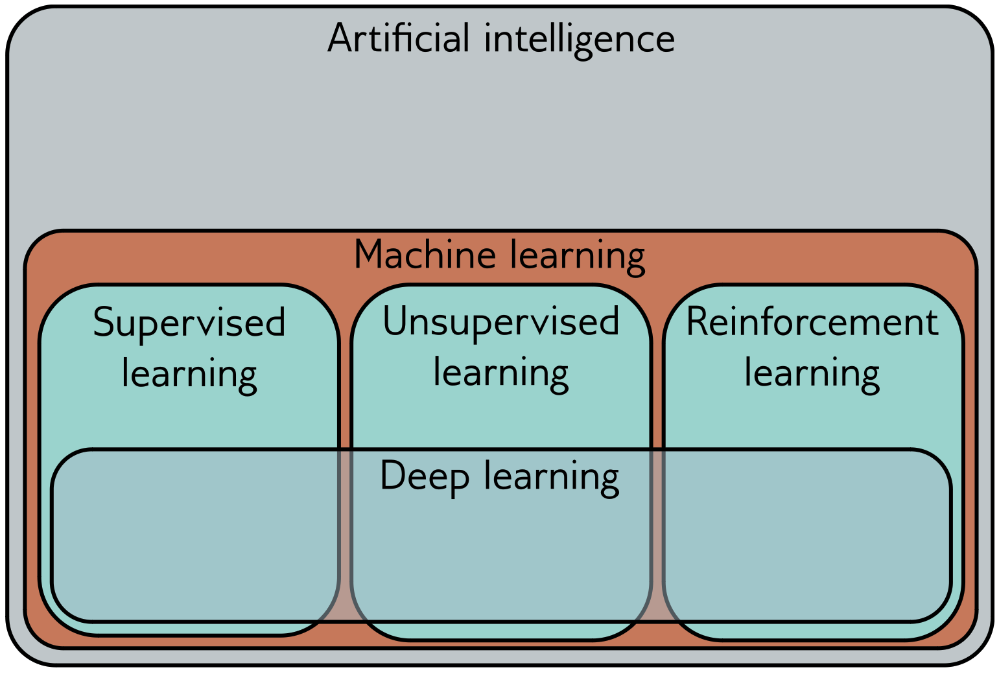

2. A fast introduction to Machine Learning#
2.1. Introduction to Machine Learning#
Machine learning is the field of study that gives computers the ability to learn without being explicitly programmed. Arthur Samuel, 1959
Learning:
A computer program is said to learn from experience E with respect to some class of tasks T and performance measure P, if its performance at tasks in T, as measured by P, improves with experience E. Tom Mitchell’s, 1997
Machine learning is a branch of artificial intelligence that allows computers to learn from given information and perform new but similar tasks.
{kind=link}
Artificial intelligence: The computer performs actions defined as requiring intelligence -> Moving target
Search Based Heuristic Optimization
Evolutionary computation
Logic Programming (inductive logic programming, fuzzy logic)
robabilistic Reasoning Under Uncertainty (bayesian networks)
Computer Vision
Natural Language Processing
Robotics
Machine Learning
Examples:
Self-driving cars
ChatGPT (LLM)
Healthcare: Diagnosis from scans
Finance: Fraud detection
Retail: Recommender systems
Transport: Autonomous vehicles
Creativity: AI art, music, writing
2.2. Historical development#
Hardware was too costly, but improvements on both cpu and gpu made it practical, or at least attainable, to apply the different AI models.


Is this the future? https://ai-2027.com/

2.3. Where to Find Data in the Basic and Natural Sciences#
Finding high-quality, publicly available data is a crucial skill for any scientist. Data is often stored in repositories, which can be general-purpose or field-specific. The articles mentioned previously likely sourced their data from a mix of their own experiments and public databases like these. General-Purpose Scientific Data Repositories
These platforms host datasets from a wide variety of scientific fields. They are often used when a field-specific repository doesn’t exist or as a requirement for publication in many journals.
Zenodo: (https://zenodo.org/)
A general-purpose repository operated by CERN. It accepts data from all fields of science and provides a DOI for every upload, making the data citable.
Figshare: (https://figshare.com/)
A platform where researchers can make all of their research outputs available in a citable, shareable, and discoverable manner. It hosts figures, datasets, posters, and code.
Dryad: (https://datadryad.org/)
A curated general-purpose repository that makes the data underlying scientific publications discoverable, freely reusable, and citable. It has strong ties to the biosciences but is open to all fields.
2.3.1. Field-Specific Databases#
These are highly curated databases focused on a single area of research.
2.3.1.1. Genomics and Molecular Biology:#
NCBI (National Center for Biotechnology Information): (https://www.ncbi.nlm.nih.gov/) A suite of databases, including:
Gene Expression Omnibus (GEO): For gene expression data from microarrays and sequencing.
Sequence Read Archive (SRA): For raw sequencing data from next-generation sequencers.
Protein Data Bank (PDB): (https://www.rcsb.org/) A database of 3D structural data for large biological molecules like proteins and nucleic acids. This is essential for the kind of molecular dynamics work mentioned in the Sfriso & Crave paper.
2.3.1.2. Environmental and Earth Sciences:#
USGS (U.S. Geological Survey) Data Releases: (https://www.usgs.gov/data) Provides public access to water data (matching the Kaur & Godara study), geological data (relevant to the Kahangwa study), and more.
NOAA (National Oceanic and Atmospheric Administration): (https://www.noaa.gov/data) The primary source for climate, weather, and oceanographic data.
Copernicus: (https://www.copernicus.eu/en) The European Union’s Earth observation programme, providing vast amounts of satellite imagery and environmental data.
2.3.1.3. Astronomy and Physics:#
Sloan Digital Sky Survey (SDSS): (https://www.sdss.org/) A massive survey that has created the most detailed three-dimensional maps of the Universe ever made. It provides images and spectra for millions of celestial objects. (We will use this for our example).
MAST (Mikulski Archive for Space Telescopes): (https://mast.stsci.edu/) The official data archive for NASA’s Hubble, James Webb, and other space telescopes.
ESO Science Archive Facility: (http://archive.eso.org/) The data archive for the European Southern Observatory’s telescopes, including the Very Large Telescope (VLT).
2.3.1.4. Chemistry:#
PubChem: (https://pubchem.ncbi.nlm.nih.gov/) A massive database of chemical molecules and their activities against biological assays.
Spectral Database for Organic Compounds (SDBS): (https://sdbs.db.aist.go.jp/) A free database containing various types of spectra (MS, NMR, IR, Raman) for thousands of organic compounds.
2.4. Types of learning#
2.5. ML in science#
https://mailchi.mp/quantamagazine.org/how-physics-made-modern-ai-possible?e=7add59a1e9
2.6. Practical, short, fast example#
2.6.1. Supervised#
Learn from labeled examples
Task: Prediction (classification or regression)
# Classification
from sklearn.linear_model import LogisticRegression
import numpy as np
# Train a classifier
model = LogisticRegression()
model.fit(X, y)
# Plot decision boundary
x_min, x_max = X[:, 0].min() - 1, X[:, 0].max() + 1
y_min, y_max = X[:, 1].min() - 1, X[:, 1].max() + 1
xx, yy = np.meshgrid(np.linspace(x_min, x_max, 200), np.linspace(y_min, y_max, 200))
Z = model.predict(np.c_[xx.ravel(), yy.ravel()])
Z = Z.reshape(xx.shape)
plt.contourf(xx, yy, Z, alpha=0.3, cmap='bwr')
plt.scatter(X[:, 0], X[:, 1], c=y, cmap='bwr')
plt.title("Supervised Learning: Logistic Regression")
plt.show()
2.6.2. Unsupervised#
No labels, find structure in data
Task: Clustering or dimensionality reduction
from sklearn.cluster import KMeans
kmeans = KMeans(n_clusters=2)
kmeans.fit(X)
preds = kmeans.predict(X)
plt.scatter(X[:, 0], X[:, 1], c=preds, cmap='cool')
plt.title("Unsupervised: K-means Clustering")
plt.show()

2.6.3. Reinforcement learning#
Learn by trial and error
Agent interacts with environment
2.7. Typical workflow#

Dataset Collection: Depends on the experiment or goals. What kind of data ? (categorical numerical) How much data? Units? reference data? data base? Data storage/access?
Dataset preprocessing: Cleaning data. Missing data. Noise. Outliers. Normalization. Training and test sets. Or Train, validation (for hyper parameters), and test set.
Model training: Depends on the actual approach. For supervised learning we need both input and output values. For unsupervised only input. No underfitting or overfitting.
Model evaluation: Testing the training success, with some defined metrics. Maybe needs to redo some previous steps.
2.7.1. Core concepts#
Data: examples used for learning
Features: inputs (e.g., age, temperature, pixels)
Model: function that maps input to output
Training: adjusting model to reduce error
Testing: evaluate model on new data
Meta-Parameters: Parameters controlling the model
Beware of under/over fitting : See also last part of https://stanford.edu/~shervine/teaching/cs-229/cheatsheet-machine-learning-tips-and-tricks
2.8. ML Algorithms#
https://www.datacamp.com/cheat-sheet/machine-learning-cheat-sheet
https://www.naftaliharris.com/blog/visualizing-k-means-clustering/
{kind=link}

2.8.1. Classifier comparison:#
https://scikit-learn.org/stable/auto_examples/classification/plot_classifier_comparison.html